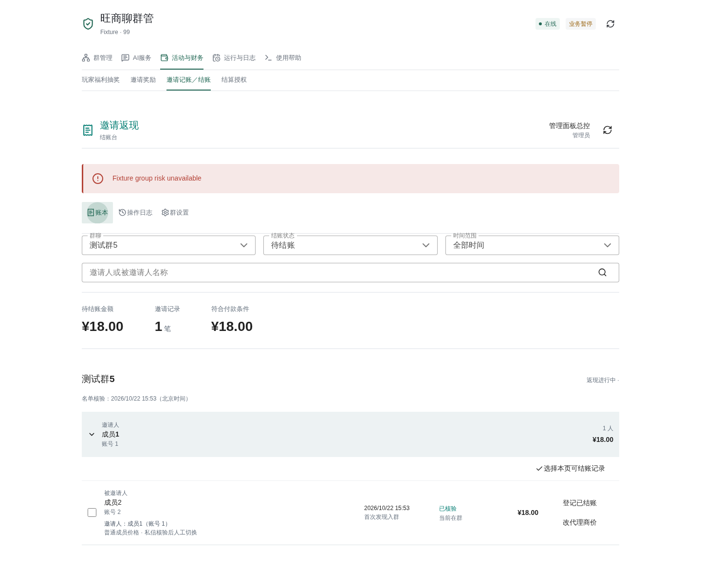
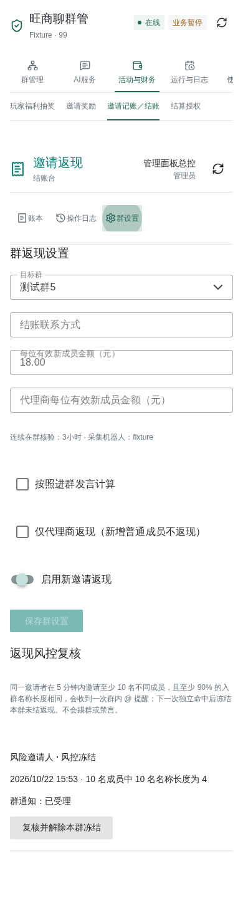
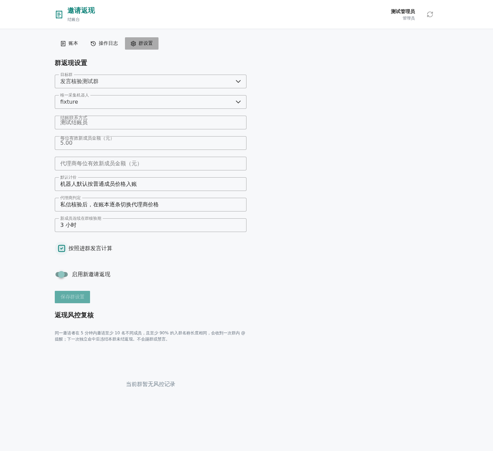
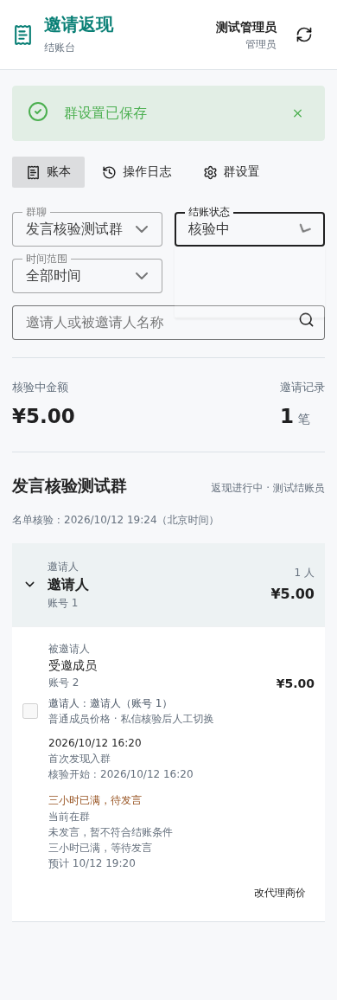

Open Plugins → Wangshangliao Management → Activities & Finance →
Invitation Settlement. Its Ledger, Operation Log and Group Settings tabs reuse
the existing filters, payment registration, corrections, price previews,
attribution confirmation and risk review. The old domain is retired, without a
redirect. Its dedicated DNS, Access application, tunnel route, port6186 service,
standalone frontend and Unix RPC have been removed. No matching Caddy proxy
exists in either file or running configuration; unrelated sites are untouched.
The collector service and
cashback.sqlite3 remain intact. No financial migration, repricing or bulk payment
registration accompanies this navigation change.
| Previous entry | Current entry |
|---|---|
| Standalone ledger, log and group settings | Same tabs inside Invitation Settlement |
| Plugin's log-only Invitation Settlement | Full ledger and settlement workspace |
| Numbered chat configuration | Rules, Player Lottery and Invitation Rewards forms |
| Private settlement grants | Activities & Finance → Settlement Grants, still independent |
This entry requires a total-control dashboard JWT. API keys and client-provided
actors/roles are rejected. Old Access identities and group ownership do not grant
dashboard login. Do not share the dashboard owner password with cashiers.
Private finance still requires an explicit per-group grant. Personal group-AI
payer consent still requires the payer's native 确认本群扣费; the dashboard cannot
impersonate it.
New registrations use a distinct dashboard/… audit principal; historical payers,
amounts and timestamps remain unchanged. Versions, collector lifecycle and saved
group scope are checked on submission and in the transaction; retries preserve
request idempotency. Disabled collectors remain read-only, deselected groups are
denied. The system registers external payments and never transfers money.
Changing a risk-review group clears old records immediately; failed loads cannot
reuse them. The release dialog binds its original group and the transaction
rechecks lifecycle. Screenshots use a temporary ledger, not real payments.


The dated material below is retained as history. Its independent Access login,
standalone domain and log-only entry instructions are superseded by this section.
Historical Access/port6186 setup and standalone test scripts are no longer
executable deployment instructions. The protected collector configuration is now
data/plugin_data/wangshangliao_cashback/collector.json, containing only
collector_id. Historical ledger identities and receipts are not reset.
Current reference updated October 20, 2026. Index · Architecture and permissions. Financial identity is separate from public group management. Dated corrections retain their original effective boundaries; source cleanup does not rerun repricing, migrations or payment registration.
The current cashback_store.py cleanup only removes the unused private old
avatar-pricing migration function _normalize_automatic_avatar_pricing; it runs
no migration, cleans no database and rewrites no historical financial rows.
The preceding three isolated warnings in 1459282 accept nickname/target and warning
recall only. Formal groups, finance and normal punishment counters stayed unchanged;
financial gaps below remain open. See scoped evidence.
This source/documentation cleanup reloads/restarts no service and sends no messages.
This sync reviews source, frontend/backend contracts and isolated offline tests.
It reads no production credentials, calls no platform or model, changes no
production database/configuration and restarts no service. The October 16/17
1400 result, grant/confirmation counts, financial hash and closed formal groups
below are historical evidence, not today's runtime state. Current group switches
belong to the coordinating runtime check, not product defaults. Unconfigured
cashback still defaults to disabled without a prefilled rate. Neither an old
block nor a fixture pass establishes today's native acceptance.
cashback.sqlite3. chat_finance_grants, chat_finance_controls and
chat_finance_confirmations add authorization, idempotency and confirmation
metadata inside it, not another production ledger. Invitation points and
lottery gates in activities.py are not cash eligibility/payment proof and
are neither converted nor written back by cash settlement.cashier / finance_admin grants bound to
the receiving account, group, business UID and NIM identity. Group managers,
owners, AI exemptions and web identities inherit no chat financial authority.
open_store.py holds tenants, management grants and verified identities;
financial grants are actually stored in the cash ledger.invitations.py / adapter resolution checks the latest business
membership event, approval state and both UID/NIM mappings, rejecting equal-time
ambiguity. Cash settlement separately checks durable proof and admission cycles.昨日邀请好友记录 followed by selection,
我的邀请 1 昨日明细 and 1 我拉了谁. Beijing calendar filters use first
observed/verified record time, not an invented precise platform join time.
Details show the latest 20 matching entries; totals include all matches.
Replies include only the sender's records and the group's public contact,
never other inviters, UIDs, Access identities or payment details. The tool still
accepts only {}; dates and selection come from the actual user message.These were reproduced with an in-memory frontend or temporary ledgers. This documentation-only sync does not fix code.
| Priority | Confirmed behavior and impact | Source |
|---|---|---|
| P1 | Switching web settings from group A to B leaves A's risk rows visible if B's read fails. Opening an old row submits the release against current group B. If that inviter is also blocked in B, the wrong freeze can be released. Stop reviewing after a failed group switch rather than using stale rows. | dashboard/cashier/App.vue:340, :346, :351, :361 |
| P2 | Embedded release_risk checks selection/admin authority but does not install the lifecycle commit guard used by payments/repricing. It can release a freeze with the collector business paused. Standalone RPC and native chat have extra guards; protection is not uniform across entry points. |
cashback.py:131, cashback_web.py:606 |
| P2 | Private assign persists the target inviter UID, but its final confirmation still shows the old Unassigned recipient instead of restating the target name/account. Server binding is not a complete human-readable change preview. |
finance_chat.py:979, :1009; cashback_finance.py:315 |
| P2 | Private “全部可结账” scans at most 101 member pages of 100 rows, without an incomplete-scan notice. If the first 10,100 rows are unpayable but later rows qualify, selection can be empty. This does not prove there is no matching debt. | finance_chat.py:900 |
The 18-file finance/invitation run produced 1,087 passes, one case blocked by
this audit's TCP-denial guard, and two dependency deprecation warnings.
test_diagnostics_refuse_tcp_even_without_a_business_service was blocked at its
temporary TCP test client, before the product refusal logic; it is neither a
confirmed product defect nor a pass. Four separate no-real-request reproductions
confirmed the issues above, which existing regressions do not assert.
No test files were added. Real Access, official App use, payments, prolonged
observation and browser end-to-end acceptance were not rerun.
The ten wangshangliaoFinanceGrants.test.mjs frontend cases and cashier
TypeScript no-emit checking passed. Generated guides/static assets were not
rebuilt or published.
Enable “仅代理商返现（新增普通成员不返现）” in Group Settings to stop ordinary-member rewards for new invitations only. Existing amounts, attribution and paid registrations remain unchanged. Delayed trusted invitations predating the effective rule retain their historical prices. Joining is not restricted.
New ordinary invitees remain recorded at zero reward in the “普通成员不返现” settlement filter, excluded from Verifying and Pending totals. “我的邀请” reports their count without claiming they are waiting for three hours. After reviewing private proof, a cashier can switch an entry to the agent price; continuous three-hour membership, optional speech and risk checks still apply. Normal and exception payments cannot bypass this restriction. Switching back to ordinary removes the reward. Disabling agent-only mode affects future invitations, not ordinary entries recorded during the stopped period.
The settlement filter adds “未归属” (Unassigned). Eligible records without an inviter now appear separately, rather than as Verifying or Pending. Confirmed independent entries, permanent baselines and blocked records remain excluded. Paid history with missing attribution is included with its original payment state.
“确认归属” selects an existing, business-verified inviter currently in this
group and requires a reason. The server refreshes the complete roster and checks
account identities, entry versions and historical prices. Self-invitation,
conflicting upstream proof and restoring departed or voided rewards are rejected.
An audited cashier confirmation is distinct from a decoded platform invitation.
Ordinary chat and AI cannot invoke this write operation. The explicitly granted
private 结账 frozen release below is loaded with final offline regressions passed.
Final thirty-minute observation is complete; native acceptance remains blocked.
This does not revise historical evidence.
Unpaid records become Pending only after their continuous three-hour observation has completed; otherwise they remain Verifying. Already Paid records retain their amount, payment time, operator and Paid state. Cashiers may repair only their own paid registrations; administrators may repair all. Attribution is not a withdrawal or a second payment.
The old first-membership caption is now “首次发现入群” (First Observed Membership). Verifying rows separately show the actual qualification start and deadline. Observation gaps longer than 120 seconds restart the three-hour clock, with the restart or migration-recovery reason shown. An old observation date does not prove continuous membership. Deadline completion still requires a successful full scan. Agent prices remain a manual switch after private verification, not avatar/name OCR.
This section supersedes the older omission of all unknown-source rows below. Baselines and confirmed independent entries are still omitted.
This section and Independent Entry Versus Missing Source retain that day's repair record. The later Unassigned view supersedes blanket omission of unknown-source rows. See the current boundaries above; historical findings and ledger evidence are not retrospectively rewritten.
Production business records prove that the NIM notification sender and native member-inviter lookup can identify the approving join operator, not the recruiter. The earlier attribution claim for account 20484723 is withdrawn. Agreement between the notification and the ledger proves consistent storage, not correct attribution.
Cash recipients now require approved business applications with matching group and UID/NIM identities. Native notifications prove joins and repeated joins only. Group-number or shared-link applications without a business inviter remain unattributed and unpayable. Unpaid entries without reliable business invitation evidence are omitted from cashier rows and count/amount aggregates; neither ordinary nor exceptional registration may substitute the owner. Paid history remains reviewable. Unpaid operator-based assignments are audited and removed, then resolved from reliable business evidence using the original price policy. Paid recipients, amounts, states, payment times and operators are not automatically rewritten; their attribution is flagged for review. Audited amount corrections, qualification deadlines and departure voids are preserved. Read-only acceptance reports business recruiter evidence separately from native join evidence. Unresolved historical sharing requires original invitation evidence, not nickname guesses.
A missing inviter does not prove independent entry, and the application's INVITE
mode alone does not prove recruitment. Explicit administrator confirmation may
classify exact unassigned/unpaid zero-value active records, or already voided
departed records without business invitation evidence, as independent entry,
using entry IDs and current versions. They remain in the database, but are omitted
from all cashier ledger rows and count/amount aggregates; historical void amounts
remain stored for audit only. They cannot use ordinary or exceptional registration.
Invitations made by that same member are unaffected.
Restart, departure/rejoin and qualification deadlines do not restore the reward;
contradictory later business evidence triggers review without automatic restoration.
Other unknown-source records remain unresolved in storage, but unpaid entries do
not appear in cashier rows or aggregates. Paid history remains reviewable. The
administrator has confirmed that unknown-source entries in this group are organic.
This is administrator maintenance, not a portal button or a classification ordinary chat can trigger.
The independent cashier entry is https://yqjz.xhn.top. Existing AstrBot menus,
chat commands, points and lotteries remain unchanged. Cash accrual starts disabled,
with no default price and no conversion of historical points.
The cashier receives payment details privately from the inviter, pays manually outside this system, then registers payment for selected invitations. The portal does not transfer money, store payment accounts, or synchronize third-party sheets.
Use the dedicated Cloudflare Access application. Its JWT signature, issuer, audience, expiration, application type, email and subject are validated on the server. A verified non-administrator login is automatically admitted as an all-group cashier. Web cashier privileges are independent of chatbot or AstrBot administrator privileges. The native chat roles below require separate, per-group AstrBot total-control grants, not inherited web identities.
Administrators enter a public, single-line payment contact of 1-200 characters
in each group's settings. No member selection, UID binding or bot interaction is
required. This text grants no website permission.
The source group list follows only the checked groups of wangshangliao_3cf3b038.
Administrators also see groups not yet configured; cashiers see all configured groups.
Unchecking a group blocks operations without deleting its history.
Access remains the authentication gate. A deployment administrator must initially
allow the cashier's login identity in the independent Access app. An authenticated
visitor can immediately read and settle every configured, selected group without a
reference or UID binding. Only the protected server configuration grants administrator
status. New login identities have a stable generated cashier label; they do not
impersonate the group's payment contact. Changing or disabling a contact does not
affect login permissions. Disabled legacy login identities remain blocked.
Legacy bindings preserve historical payment ownership without requiring re-enrollment.
On October 7, 2026, the binding UI and endpoints were removed. The old contact tab
was replaced by “结账联系方式” in group settings. Existing contact names migrate
to plain text without changing payments or permissions. The sync-cashiers script action was removed so local users
cannot overwrite the independently maintained Access allowlist.
Manage email admission at Access. For urgent revocation, remove admission and revoke
existing Access sessions; the origin cannot infer policy changes from a still-valid
previously issued JWT. Streams reconnect through Access at most every 60 seconds.
Under group settings, choose one collector bot, one payment contact, and a positive per-member amount. Activation requires a complete member directory and the available historical-member baseline. Test with a fresh ordinary account in a test group before explicitly activating a production group.
Live refresh pauses while editing group settings. Concurrent saves reject stale versions and reload current values for review; they never silently retry or overwrite another operator's changes. Re-entering group settings or explicitly refreshing reads the current version before enabling form controls. After saving, the ledger selects the saved group. Changing public contact text does not alter cashier login access or balances.
On October 9, 2026, an independent-deployment sandbox issue was fixed. Closing the final WAL policy-store connection removes its transient WAL/SHM files; the read-only cashier cannot recreate them. Previously the failed read became an empty group list, showing no configured groups and blank settings. Existing ledger records and rules were not deleted; do not reconfigure or rebuild the invitation baseline.
The low-write policy store now uses DELETE journaling; the cash ledger remains WAL.
Production conversion preserved policy/history rows and restarted only the standalone
cashier. Unavailable or invalid scope returns 503 policy_scope_unavailable, not an
empty list. The UI reports failure and blocks payment/settings writes until recovery.
Refresh the page, or reauthenticate through Access if expired; never duplicate an
unconfirmed payment registration.
In a configured cashback group, the public commands 我的邀请 and 邀请奖励
read the sender's cash ledger, showing the current per-invite yuan rate, pending
and registered payments, membership counts and the public payment contact.
我拉了谁 lists only that sender's cash invitation names and statuses.
This works without enabling the legacy points module; points remain separate.
Paused cashback retains historical queries. Groups without cashback settings
continue using the original points queries. Queries never create payments.
The self-query entry is 我的邀请; see the full command tree
for 菜单. A private 我的邀请 or the zero-argument AI query
first returns numbered group names, limited to groups selected by the current
collector with cashback enabled. Reply with 1, 2, 3 or 我的邀请 1 for the
sender's selected-group totals. No group/user UIDs or paused groups are displayed.
Numbers are bound to the current sender and private conversation for ten minutes.
Closing a group, changing configuration or switching accounts invalidates old menus.
Unlike the existing group-chat historical query, this private entry excludes paused groups.
The selected-group summary ends with “如核算有问题，请联系本群结账员：…”
(Contact this group's cashier about calculation discrepancies), using only the
group's configured public contact. Missing contacts are explicitly unavailable;
Access email identities and other groups' contacts are never substituted.
Group-chat summaries and invitation details include the same note. Ordinary/agent
unit-price captions refer to invited members, not to inviters.
Groups without the speech option retain the existing three-hour reply without
speech data. With the option enabled, private commands and the self-only AI tool
show spoken/unspoken unpaid invitation counts and each member's speech status.
Mature silent entries show “核验中（待发言）” (Verifying: awaiting speech), not
a misleading claim that the three-hour period has not elapsed.
Select 按照进群发言计算 in the selected group's settings and save. The checkbox defaults to off, preserving the existing three-hour rule. When enabled, unpaid invitations require both three continuous verified hours in the group and authenticated nonblank human group text after joining. Speaking never shortens the timer; speaking after the timer has elapsed can qualify the entry at the next successful collection. Private messages, the bot's own messages, join notifications, blank text, invalid identities and pre-join messages do not count.
Speech timestamps and replay cursors survive restarts. This process neither invokes AI nor executes message content, and groups with the option disabled do not read message history. Enabling rechecks existing unpaid eligibility without changing prices or historical payments. Withdrawing a payment rechecks the current rule. Ordinary payment enforces speech and time requirements on the server. An actual-payment exception grants no eligibility. Disabling restores the original time-only rule; leaving and rejoining never restores void rewards.
These isolated fixtures show the group checkbox and a mature silent member on mobile:


Pending invitations are grouped by exact inviter account, with names displayed alongside the account. Search, group/status filters, pagination, expanded details, single registration and same-inviter batch registration are available. On October 12, 2026, the old 100-entry outer pages were replaced with pages of at most five inviters. One inviter no longer appears as separate sections across outer pages. Headings show the inviter's complete count and amount within the current group, state, name search and time window. More than 100 matching members use pagination inside that single section without changing its heading total. Unassigned entries also use one section with member pages. Identical names do not merge different accounts, and historical name changes do not split an account. Selection applies only to the displayed member page, with the existing 100-record submission limit. Paging and filtering clear selection, and pages that disappear after a refresh are clamped to an available page. All settlement views follow the same rules; totals, sections and entries share one database read snapshot. Group headings explicitly identify the inviter. Each entry labels its invitee and repeats the corresponding inviter's name and real account ID, rather than relying on its position beneath a heading. Eligible, non-excluded records without attribution appear separately as Unassigned, outside payable totals/selections. Baselines, confirmed independent entries and blocked eligibility remain excluded. Confirmation explicitly identifies the recipient inviter; the invitee list is not a list of payment recipients. All dates use Asia/Shanghai. First confirmed membership time is not presented as an unknown exact upstream join time. Reloading the same browser tab retains its selected group only while that group remains authorized. A new page still defaults to pending records. Settings saves and conflicts never register unsettled invitations as paid.
Amounts are integer cents, frozen per record. Permanent deduplication uses the business group ID and invitee UID within the Wangshangliao platform, independent of bots, inviter changes and nicknames. Leaving before payment voids the record; rejoining never restores it. Leaving after payment does not reverse that payment.
Submission refreshes the complete roster and checks record versions and current authorization. Missing evidence, incomplete rosters, conflicting attribution, departures and stale versions block ordinary registration. Retries are idempotent. Only selected records change; new invitations remain pending.
Select “已结账” (Paid), click “撤回结账” (Withdraw Settlement), enter a reason,
and confirm with “确认撤回”. Cashiers can withdraw only their own registrations;
administrators can withdraw any registration. Selected records for the same
inviter can also be withdrawn together. Cancelling leaves the ledger unchanged.
After success, the page switches to Pending while keeping the group, name and
time filters. Present members return to Pending only after the qualification
deadline and configured price requirements are met; otherwise they remain
Verifying. Members who have left, including those who rejoined, remain void.
Amounts, member price classes and attribution are unchanged. This reverses only
the registration, not any actual external transfer. Original payment and
withdrawal audits retain the actor, time, reason and before/after values.
The former “更正” / “更正登记” controls are now “撤回结账”; logs display
“撤回结账登记”. The backend still uses operation=correct, retaining existing
audit and idempotency records. Administrators can still register exceptional
payments already made outside the system.
Agent pricing refers to the invitee, never the inviter. Avatar OCR and name-digit classification are removed. New invitations initially use ordinary member rules. After reviewing private proof, a cashier may explicitly switch the entry between ordinary and agent pricing. Separate group rates remain; renaming, attribution changes and later rate changes do not reprice old entries.
New invitees enter verifying with a durable deadline three hours after the first
complete-roster membership observation. A successful fresh collection must confirm
membership, attribution and pricing before transitioning to pending. Leaving or
rejoining voids eligibility. Short restarts preserve deadlines; observation gaps
over 120 seconds restart the three-hour window with an audit rather than treating
unknown offline periods as continuous membership. Conversion waits for a successful
scan and is not guaranteed at the exact second. Ordinary payment enforces this
gate server-side. An administrator's actual-payment exception records an external
fact and does not certify qualification.
Migration enables the policy for new invitations in existing groups, preserving every existing entry's amount, state, eligibility, payment and version. Existing records are not put back into qualification. New group settings use three hours.
POST /api/price-preview computes original/target cents, entry and price-policy
versions, the group rule version and a digest. Repricing through /api/payments
requires the complete price_confirmation; the transaction recomputes and
compares it, and idempotency includes the confirmed fields. A changed rate or
record requires a new preview. Old clients missing the confirmation are rejected
and must refresh rather than automatically retry.
Only financial administrators may record exceptional payments. A reason and
actual_payment_confirmed=true checkbox are mandatory. This may record money
already paid before qualification, speech or departure checks passed; it cannot
bypass recipient identity, confirmed attribution, valid prices, risk or
duplicate-payment checks. Original qualification evidence and reasons are
retained, and the page/audit distinguish normal registration from exceptions.
Withdrawing a registration neither reverses external money nor restores void
rewards; current qualification rules apply.
New-invitation collection baselines are separate from existing-debt evidence cycles. Disable/re-enable must not strand legitimate old debt. Compatible migrations add only reliably provable metadata, not guessed attribution or rewritten financial fields. The first upgrade resets source cursor/scan metadata once to recollect complete membership events, without changing old financial fields. Newer reliable departures/natural joins supersede old invitations. An individual missing-inviter source is retained and audited without poisoning valid rows. Historical concerns produce read-only review candidates, not automatic repairs, freezes or clawbacks. Contradictory evidence rejects new payments without rewriting the historical entry.
At least ten distinct invitees within five minutes, with at least 90% sharing
one trimmed join-name length, create a warning. The first group mention's
send/acceptance status is recorded separately, not inferred from ledger storage.
A later independent hit freezes that inviter's unpaid cashback in this group;
ordinary and exception payments cannot bypass it. This neither kicks/mutes
members nor rewrites payments. Source, account, group and admission-cycle checks
still apply; unknown names are not treated as matching lengths.
Web administrators or the group's chat finance_admin may release a freeze
with review evidence, not automatic qualification. See the current issues above
for web group-switch and embedded-mode guard gaps.
The October 9, 2026 check incorrectly treated 11 native join notices as recruiter
proof; that attribution conclusion is withdrawn. It independently recorded three
unpaid departure voids; before the requested correction, eight entries totaling
CNY26 remained pending, zero registered. On October 9, the user's explicit request
changed only 芜湖's amount from CNY5 to CNY3 and kept it pending. The ledger then
assigned 真龙国际 (20484723), which is not recruiter proof. Other original entries
were unchanged. The eight/CNY24 figures are a historical snapshot, not today's balance.
Audited per-entry amount corrections are counted separately. Original native
business attribution and invitation-time pricing must still match; each maintenance correction
requires a reason, trace and consistent amount/version snapshots without identity
or payment changes. Unexplained repricing continues to fail acceptance.
The October 8 six/one/five/CNY17 figures are historical snapshots. No second native
rejoin notification exists, so live rejoining is not passed.
Run .venv/bin/python scripts/check_wsl_invitation_history.py --group 1516387
to read the original inboxes/cash ledger without account login, repricing or
payment registration. Isolated tests cover rejoining after a rate change while
retaining the original void amount. Actual Access registration and offline/recovery
acceptance still require the real operator and an already-settled batch; do not
mark pending entries paid for testing.
The portal receives scoped SSE invalidations, reconnects automatically and keeps 30-second polling as a fallback. Each group has an independent collection cycle with a 10-second healthy interval and a shared maximum of three background scans. Failures back off independently for 20, 40 and then 60 seconds; a slow group does not hold up the next healthy cycle. This is not a latency guarantee at large scale. The standalone web unit has a 50% CPU quota, 256MiB memory high watermark, 384MiB hard memory limit and 128-task limit. Collection still shares AstrBot's CPU, memory and model quota with other platforms; this is not full isolation. Upstream roster verification can still take longer. Selection and confirmation dialogs defer refreshes so incoming updates do not change an active payment batch. Each stream rechecks identity and group permissions, expires after 60 seconds, and must pass Access authentication again when reconnecting. Roster timestamps alone do not invalidate SSE clients. Bound identities are rechecked read-only rather than acquiring a SQLite write lock every second. Verifying rows distinguish elapsed-time checks, missing names, missing agent prices and unresolved attribution, and show their expected deadline.
The plugin log view includes unscoped login, binding and browser-error events by default. Clear “包含全局事件” to show only the selected group; events belonging to other groups are excluded.
“操作记录” is renamed to “操作日志” (operation logs). The independent portal and
the plugin's “邀请记账／结账” module share scoped logs for requests, rejected access,
validation failures, collection, membership transitions, configuration, settlements,
corrections and fixed frontend error types. Filters include severity, group and
server-generated request IDs. Tokens, request bodies, payment accounts and raw
exception messages are excluded. Requests rejected at the Access edge must be
investigated in Cloudflare logs; offline browser errors cannot always be delivered.
Successful GET and scan diagnostics are sampled every five minutes per action,
group, principal, level and error code. Unchanged scan failures are sampled, but
changed errors and recovery are immediate. Financial audits and HTTP rejections
are never sampled or deleted. Scan diagnostics include duration, exception type
and a matching server-generated trace, without duplicate warning lines.
Routine payload-free receive diagnostics use DEBUG; failures remain visible at
WARNING/ERROR with distinct allowlisted protocol codes instead of other.
The common event bus no longer reads or prints Wangshangliao message outlines
or names, logging only the route and hashed identifiers. Existing historical
logs are not erased. Message processing and other platforms' logging are unchanged.
Other plugins' failures are not Wangshangliao failures and are not hidden by
disabling global warning logs.
Only invitation-history responses have a 3 MiB (3,145,728-byte) decoded-output and compression-window limit. Other business responses and messages retain their 1 MiB limits. Authentication, oversize rejection, extra-frame and trailing data checks remain. Invitation responses are capped at 4,096 records; valid group records beyond the former 200-record bound are no longer rejected. Approved candidates and the Unix-seconds cursor commit in one transaction. Queries overlap the previous second. Cached evidence is bound to group, bot, authenticated account and activation time, survives restart, and must still match both parties' current UID/NIM mappings before it establishes eligibility. Source faults back off independently, appear on the ledger, and block ordinary payment registration/correction until recovery. Read cooldowns are informational waiting events, not source faults. Recovery creates a separate event; historical source warnings show “已恢复” and their recovery time on both log surfaces, without deleting or changing original audit severity. Missing-login requests and normal expiry of an established stream use INFO; invalid identities and unauthorized access remain WARNING. Browser network interruptions use WARNING with a 60-second per-principal sampling interval. Script errors remain ERROR. Payment requests are not automatically retried. Attribution conflicts and historical paid-recipient reviews remain actionable.
The collector uses authenticated invitation notices with upstream timestamps and approved business invitation records. Pending invitations, bots, self-invites and provisional attribution are not payable. Unknown historical prices or identities are not guessed. Available histories and the current complete roster form the activation baseline; unseen upstream history cannot be claimed as covered. An unobserved leave/rejoin between roster scans cannot be reconstructed when the platform supplies no corresponding reliable event.
service_mode supports embedded (the configuration fallback) and standalone.
Embedded mode runs 127.0.0.1:6186 in the plugin; standalone mode runs a separate
loopback web process while the plugin owns collection and the protected
rpc/cashier.sock. Both use the same ledger without another bot login.
Standalone reads history locally; platform-dependent writes use allowlisted
Unix RPC with the original Access JWT revalidated, never a browser-supplied role.
Plugin unavailability retains authorized historical reads but rejects writes
without automatic retries or a replacement ledger. These are source-supported
deployment modes, not a runtime configuration change performed by this sync.
Neither mode exposes general AstrBot administration APIs. Its Vue/Vuetify entry
does not load AstrBot dashboard credentials. Responses are non-cacheable and
writes require same-origin JSON.
Configuration and the independent SQLite ledger live under
data/plugin_data/wangshangliao_cashback/. Administrator identities are configured
in protected access.json; that file contains no Cloudflare API token.
Use SQLite's backup API before deployment, not a live main-file-only copy.
.venv/bin/python scripts/deploy_wsl_cashback.py backup
cd dashboard
npm run build:cashier
cd ..
.venv/bin/python scripts/deploy_wsl_cashback.py prepare
systemctl restart astrbot
.venv/bin/python scripts/deploy_wsl_cashback.py publish
.venv/bin/pytest -q tests/test_wangshangliao_cashback.py
PYTHONPATH=. .venv/bin/python scripts/check_wsl_cashier_browser.py
Browser acceptance uses signed fixture identities and a temporary database,
not production payments. Screenshots are saved to data/temp/cashier-acceptance/.
Set PLAYWRIGHT_CHROMIUM_EXECUTABLE if using an existing Chromium installation.
To disable collection, turn off the group switch. To stop the portal completely,
remove its runtime configuration and restart; keep the ledger and audit history.
See the Chinese reference for the configuration example, endpoint contracts, complete rules and recovery notes.
Loading, observation,
1400, authorization counts and closed formal groups in this section describe only the October 16/17 window, not October 20 runtime status or renewed acceptance. Current source behavior, confirmed defects and this audit's test limits are above. “Final version” refers to that release, not subsequent code or operational changes.
This section follows finance_chat.py, cashback_finance.py,
finance_sandbox.py and open_rpc.py. The primary operator reports plugin
loading of the final guarded version at 22:49:01 UTC on October 16, 2026
(06:49:01 Beijing on October 17), including the last receipt-read and
preview/execution generation-binding guards. Previously confirmed offline regressions and
existing read-only UI evidence remain. Earlier source-only/patch-not-loaded wording is historical.
The final thirty-minute observation is COMPLETE, ending at 23:19:07.064 UTC
on October 16 (07:19:07.064 Beijing on October 17), with 61 samples and protected state/grants unchanged.
Native financial acceptance remains
BLOCKED, not complete release or real-payment acceptance. Dated ledger
evidence, attribution corrections and outstanding Access acceptance remain intact.
The web cashier retains its separate CF Access gate. Native private settlement
requires neither CF login nor web identity binding and never elevates a chat
identity to global web administrator.
Chat financial access defaults to none. Only the AstrBot total-control panel's
开放服务 → 结算授权 (Open Service → Settlement Authorization) may grant,
change or revoke finance_admin / cashier, bound to the receiving bot
account, group, verified business UID, real NIM identity and grant version.
Ordinary group managers, native owners, AI exemptions and web cashier identities
inherit no chat financial role. A finance_admin cannot grant roles in chat or
administer other groups.
| Chat financial role | Powers within the explicitly granted group |
|---|---|
cashier |
Query six ledger views; register payment pay; withdraw own registrations correct; switch ordinary/agent prices after proof review reprice |
finance_admin |
The above plus withdrawing other operators' registrations in this group; single-entry attribution assign, actual-payment exceptions exception, settings configure and risk review risk_release |
Grant requests strictly validate account/group/UID, role, booleans, version and
request ID before platform I/O. Display names prefer the trusted directory's
userNick; callers cannot supply forged NIM identities. An exact existing grant
can be deactivated with its account offline or adapter/tenant removed. This
still requires authenticated dashboard control and an active service, never a
fallback for new grants, reactivation or cross-scope privilege escalation.
Privately send 结账, select a financially granted group, then Pending
pending, Verifying verifying, Paid paid, Unassigned unassigned, Void
void or No Reward no_reward. Name filters, Beijing-time ranges and paging
are available. Entries group by exact inviter account, never identical names.
This is separate from the self-only 我的邀请 query and exposes no AI tools.
A group-chat entry only directs the caller to private chat, without ledger data.
Select member numbers such as 1 3, 本页 (this page) or 全部可结账
(all payable in scope), then choose registration, withdrawal, repricing or an
administrator operation. A batch contains unique selected entries for the
current group, one inviter and current filters, at most 100. “All payable”
takes only the oldest 100 matching payable entries, explicitly reports truncation
and never continues automatically. Attribution accepts one entry and a
server-listed existing inviter, with evidence rather than nickname guesses or
overwriting contrary proof.
The server preview freezes group, recipient inviter, members, amounts and
entry/rule/grant versions; repricing also confirms the target amount. A six-digit
code expires after two minutes. Payment and exception registration require
确认已付款 CODE; other changes require 确认修改 CODE, not the ordinary
menu's 1. Withdrawal, repricing, attribution, exceptions, settings and risk
review also require a reason/evidence. 0 goes back and cancels the unsubmitted
confirmation; 取消 exits. Switching groups or entering menus/AI discards the
old confirmation without undoing completed registrations. Navigation expires
after ten idle minutes; unsubmitted codes do not survive a process restart.
The loaded ingress guard connects BusinessSettings.observe
to FinanceChat.observe at admitted native private ingress. For the exact
receiving account, sender UID, NIM peer and private session, 0, 取消,
结账 / /结账, 菜单 / 帮助 / 私聊菜单, /chat and /exit invalidate
outstanding financial navigation generations before the serialized sender lane
or a database lock can wait. This observer performs no database or platform I/O;
native_guard rechecks the generation at commit. Existing worker cancellation
checks and in-memory/persisted service/tenant state/version guards remain.
The guard loads with the plugin, without core changes or an AstrBot-process restart;
this documentation sync operates no service. Exact private 结账 / 结账结果
also end only the same account/sender principal's own AI session and dismiss its
menu confirmation before identity verification or throttle rejection. Unverified
or throttled entry gets no financial-ledger/model access or financial authority;
other accounts, senders and conversations remain untouched.
Preview captures local generation before awaiting database work and binds it
to the confirmation. execute requires that bound generation as well as commit
guards, rejecting old previews even if cancellation precedes a queued handler
or falls between preview commit and return. FinanceChat.advance also checks
native_guard before root menu item 8 and completed-code receipt reads;
expired, closed or rotated sandboxes cannot display old receipts.
Submission rechecks identity, group financial authority, service/group state, versions and the operation's ledger evidence. Pause, departure or deselection blocks unsubmitted writes; authorized history remains readable. Payment, withdrawal, attribution and exceptions retain complete-roster and invitation-source checks; repricing rechecks the server price preview. Ordinary payment still requires continuous three-hour qualification, optional speech, reliable attribution, pricing and risk checks. An exception only records an external payment already made, not passed qualification or restored void eligibility. Production chat reuses the existing ledger/audit and the platform/group/invitee deduplication key, without generating another reward. Confirmation and mutation commit atomically; a completed confirmation does not register twice. Nothing transfers money automatically, and withdrawal never reverses external money.
Success returns an operation reference/receipt. If delivery is uncertain, send
结账结果 to check your latest operation in the selected group, or choose settlement
menu item 8 (recent settlement result). Without a selected group, select an authorized group
first. Never pay for acceptance, repeat a payment because its receipt is missing
or automatically retry a mutation.
Total-control finance_test requires an existing explicit test window containing
private_commands, pinned to group 1459282, DaHa 43506527 and Linxi
31846829. It lasts at most five minutes and never exceeds that window.
Each opening creates a separate chat-tests/<unique-id>/cashback.sqlite3 with
synthetic invitations and simulated three-hour observations. Replies are labeled
“测试账本，不代表真实付款” (test ledger, not real payment). Its seeded
financial administrator exists only in that database, granting no production
authority or changes to production amounts, attribution or payments.
Synthetic sources using the business_apply_log type are still not real
business evidence, real continuous observation or a real-payment acceptance pass.
A fresh official read at 22:46 UTC on October 16, 2026 still returns
secondary_security_code_required, provider number 1400: one read-only request,
zero login attempts, no authentication bypass or saved response body:
/opt/backups/wsl-chat-finance-live-20261016T221810Z/platform-read-fresh.json.
The earlier aiohttp probe remains at
/opt/backups/wsl-chat-finance-predeploy-20261016T2104Z/platform-aiohttp-probe.json.
Set the secondary security code in the official Wangshangliao app, then recheck
the directory and complete native workflow; never send that code to the bot.
No native settlement pass is recorded. Diagnostics or rehearsal do not prove
recovery or bypass the gate.
Formal groups 1516387 and 1488006 remain closed; this documentation sync
enables no business workflow.
/tmp/wsl-chat-finance-release-complete.xml; suite time 198.213 seconds,
operator-reported total time 198.66 seconds.
Ten added tests cover only the harness/reporting modes; the financial subset
remains 237, included in the full count./opt/backups/wsl-chat-finance-ui-20261016T220524Z-3imMqB/evidence.json.
scope_selected=false and finance_members_requests=0 do not accept actual grants
or native chat. This UI run predates the last guarded load, not a post-load rerun.88566f7c5acae3604134e67e77636b40462d5e6712a70070825be6450e8d0407.
Last-load preload audit:
/opt/backups/wsl-chat-finance-guarded-preload-20261016T2248Z/audit.json,
still 1468 entries, 64 historical review candidates and the same hash; formal groups stay paused.
Final backup /opt/backups/wsl-chat-finance-release-final-20261016T2331Z includes
entries-full-equality.json: all 36 columns of all 1468 entries equal the original
20261016T202209Z-before snapshot. Its audit.json retains the same financial hash
and 64 review candidates, with grants/confirmations zero.
Main reports 11 source hashes, all 11 platforms running and main process PIDs unchanged.protected_unchanged=true:
/opt/backups/wsl-chat-finance-live-20261016T211823Z/evidence.json./opt/backups/wsl-chat-finance-live-20261016T224901Z/evidence.json:
COMPLETE at the time above, with 61 samples, protected_unchanged=true,
grants_unchanged=true, zero created grants, cleanup_errors=[], native_passed=false.
The log window contains two ERRO entries (settings:484, platform block) and 108 WARN entries;
main reports financechatfail=0, not an error-free log window.
The previous /opt/backups/wsl-chat-finance-live-20261016T221810Z/evidence.json
finished with 61 samples and protected_unchanged=true, but predates the last
guards and remains history, not coverage of this load.
Earlier artifacts /opt/backups/wsl-chat-finance-live-20261016T213835Z/evidence.json
and /opt/backups/wsl-chat-finance-live-20261016T220423Z/evidence.json remain historical.
The latter was reported RUNNING on an older version and cannot replace the final window./opt/backups/wsl-native-load-20261016T221946.json:
20 groups, 100 messages/second for 30 seconds, 3000 messages; 40 read-only financial
interactions from four verified fixture principals, P95 84.73ms; rule P95 9.76ms,
durable ingress P95 3.89ms and production read-only query P95 2.117→1.947ms.
The fixture ledger stayed unchanged with no financial writes. Standalone four-CPU
execution did not emulate production cgroup quotas or accept native App use,
real financial commits or a stable SLA. Earlier
/opt/backups/wsl-native-load-20261016T220706.json retains 1.782→2.855ms (+60.15%)
and its legacy relative-gate RuntimeError, without reinstating the cancelled 10% blocker./opt/backups/wsl-native-load-20261016T230126.json passed its worker,
but the legacy 10% gate made the command EXIT 1, not command success./opt/backups/wsl-native-load-20261016T231514.json, 40 read-only financial interactions,
P95 130.303ms; rule P95 18.420ms; production read-only query P95 2.252→5.372ms.
Queue peaks 4/2/3, RSS 221462528 bytes, 4177 rejections, two mocked slow AI calls,
fixture ledger unchanged. absolute_query_report does not enforce the cancelled
relative gate: actual growth is 138.52%, within_ten_percent=false.
EXIT 0 accepts neither the 10% target nor a stable SLA. Standalone four CPUs
did not emulate production cgroup quotas or establish real native App, financial-commit/payment acceptance.Full evidence and the performance-criteria adjustment are in the acceptance record.